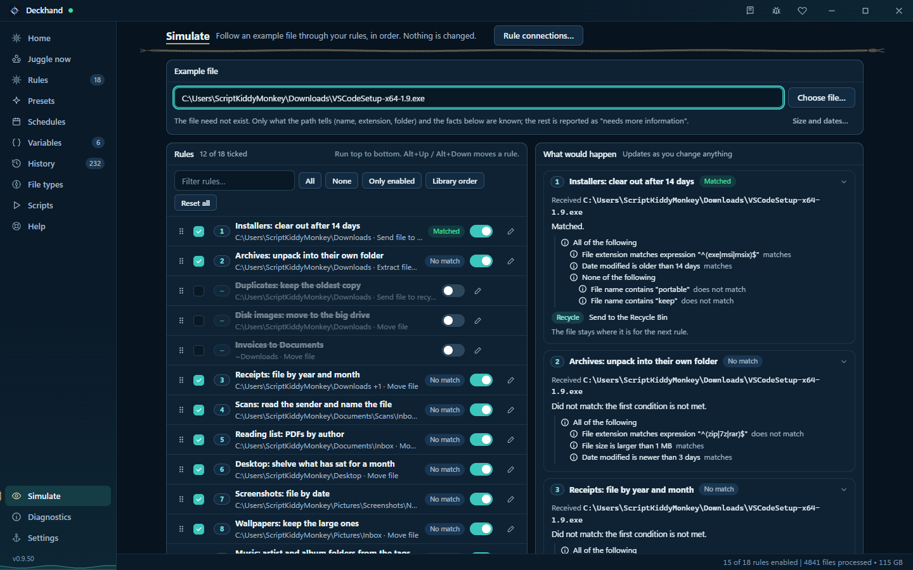
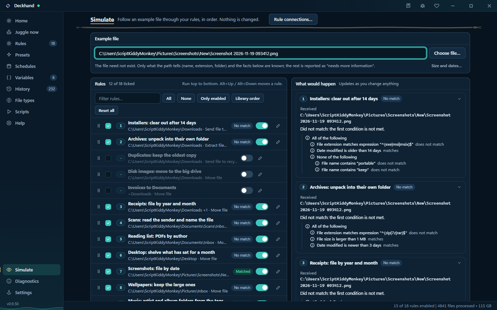

Simulate
Follow an example file through your rules in order, without changing anything.
Simulate answers "what would my rules do to a file like this?" It follows an example file through your rules, in order, and shows what each rule decides. Simulate itself never changes a real file.
Use a made-up file when rules are switched on
Simulate does not stop your live rules. If you point it at a real file that sits in a folder a rule is watching, and that rule is switched on, the rule may move, rename or delete the file while you look at it, and the result you read will not match what you see on disk.
- Rules are on and watching: use a made-up path such as
C:\Users\You\Downloads\Steam.exe. It does not have to exist. - Want to test with a real file: switch the rules off first, or copy the file to a folder no rule watches, and turn rules on inside Simulate only. Changes there stay in the simulation.
What a made-up file cannot show
A path that does not exist has no contents and no embedded details, so Simulate cannot tell what depends on them: file contents, checksums, and PDF, audio or image details. It reports those as "needs more information" instead of guessing. Use a real file for those, with the live rules off.
Try a file name
- Open Simulate.
- Enter the path of an example file. It does not have to exist. You can also give a size and created and modified dates.
- If the file does exist, you can use the real file's facts.
- Read the report: each rule, whether the file matched, and where the file ends up after each step.
The first screenshot uses the made-up path C:\Users\ScriptKiddyMonkey\Downloads\VSCodeSetup-x64-1.9.exe. The left side lists the rules in run order with the ones that are ticked. Switched-off rules are struck through and have no number. On the right, What would happen follows the file down the list: rule 1, Installers: clear out after 14 days, is marked Matched, shows each of its conditions with the result, and ends with the action it would run (Recycle, send to the Recycle Bin). Rule 2 and the later rules show No match.


A different name matches a different rule. In the second screenshot the path is C:\Users\ScriptKiddyMonkey\Pictures\Screenshots\NewScreenshot 2026-11-19 093412.png. Rule 1 now says No match, because the extension is not exe, msi or msix. Rule 7, Screenshots: file by date, is Matched.


Because rules run top to bottom and a later rule sees the file where an earlier one left it, Simulate is the quickest way to find rules that fight over the same files.
Edit without risk
Edits, ticks and ordering in Simulate belong to the simulation only. Reorder rules, switch some off, or change a condition to see the effect. Your saved rules are not changed.
Simulate, Test one file or Preview?
| Use | To |
|---|---|
| Test one file... (in a rule's Preview) | Pick one real file and see what one rule's conditions and actions would do with it. |
| Simulate | See what a set of rules does to a file when they run in order. |
| Preview | See what a rule will really do to the files in its folder. |
Simulate stands in for a real folder. When you need to know what will happen to actual files, use Preview.